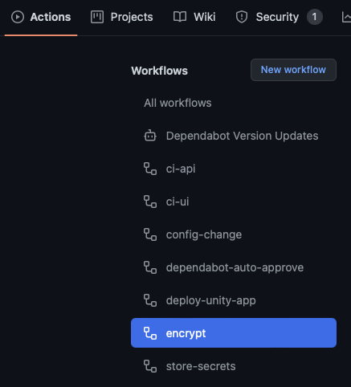
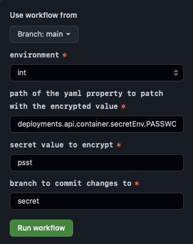
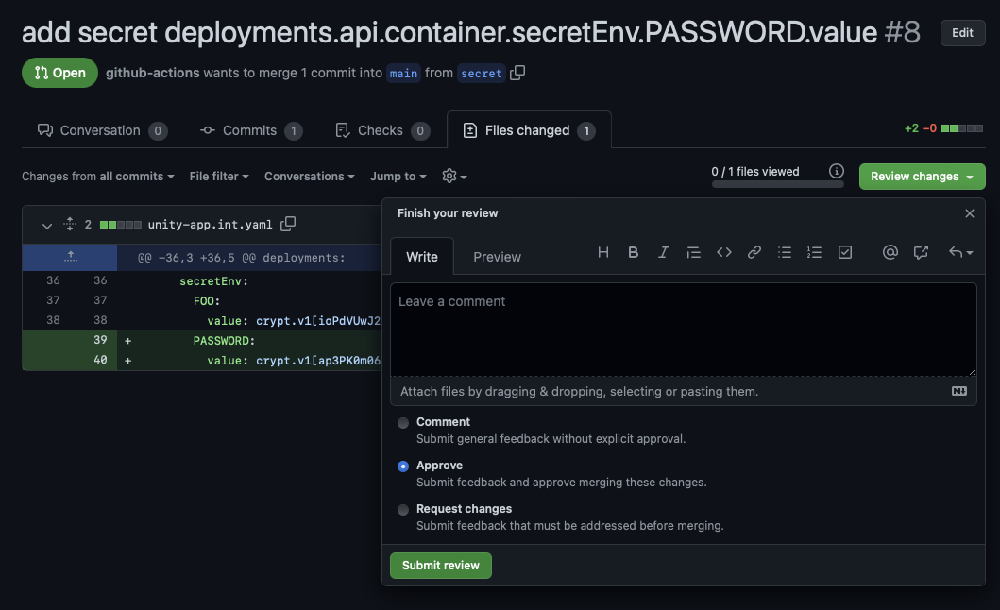
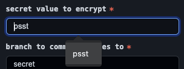

Table of Contents
App Configuration
Apps may need environment specific configuration, such as URLs to external systems or secret information like client-ids.
Environment Variables
Environment variables can be configured in the unity-app.*.yaml files.
deployments:
api:
# ...
container:
env:
FOO:
value: some-value
BAR:
value: another-value
The values may be set specific to the environment.
Especially with Quarkus, environment variables can be used to set all Config Sources. Other configuration mechanisms, like config files, are currently not supported.
Secrets
To configure an app with secret information, values can be stored in encrypted form in the unity-app.*.yaml files.
deployments:
api:
# ...
container:
secretEnv:
PASSWORD:
value: crypt.v1[atAkljasdjs/0==]
To encrypt a value, run the encrypt workflow in your repository.
There are two ways to do this, via the browser or via gh. For experts, the preferred way should be using gh, since there is no risk of caching secret data in the browser.
Secrets will be available in decrypted form inside the container as environment variable. This means that any user that has access to the container can view the secret values, e.g. by running env. Ideally, secret environment variables would be unset or overwritten after reading them from the application to avoid exposing them to a potential attacker. However, this is not possible at the moment out of the box.
Encrypt in the Browser

Specify the yaml path, e.g. deployments.api.container.secretEnv.PASSWORD.value, the secret value psst and the environment.

The workflow will take the CRYPT_MASTER_KEY, stored in your repository, and encrypt the secret value. Then a pull request will be created, which you can review, approve and merge afterwards.

🚨 Never share the CRYPT_MASTER_KEY with anyone, this key can be used to decrypt all the secrets in your yaml file.
⚠️ One drawback of the browser based approach is, that the secret value may be cached in the browser. Make sure the secret information is removed from the browser after running the workflow. In Chrome this can be done by going back to the input, navigating down with ↓ and delete the entry with Shift + Del.

You can rename the environment variable afterwards. Note, that encryption is environment specific as CRYPT_MASTER_KEYs are different, so you cannot copy the encrypted value from int to prod. Instead, run the encrypt workflow for both environments.
When deploying an app, the deploy-unity-app action will validate that all secrets can be decrypted with the current CRYPT_MASTER_KEY. If decryption fails, the app cannot be deployed.
Encrypt via gh
Make sure gh is installed from cli.github.com and follow GitHub CLI quickstart.
Next, from your repository run:
gh workflow run encrypt \
-f "environment=int" \
-f "yaml-path=deployments.api.container.secretEnv.PASSWORD.value" \
-f "secret=psst"
Headers and Cookies
You can also set custom headers or cookies to provide environment specific configuration for your app. See HTTP Headers for details.
When using cookies, keep in mind that these mey be shared on the entire domain unity.bmwgroup.net. So it is recommended to use the following naming convention and config:
deployments:
ui:
headers:
response:
add:
Set-Cookie: app-foo-ui-environment=int; Secure; SameSite=Strict; Path=/foo/ui
The name of the cookie app-foo-ui-environment should have the following segments:
app-<name>-<deployment>-<cookie-name>
<name>name of your app<deployment>name of the deployment (optional)<cookie-name>name of the cookie value
Setting Path=/foo/ui is also recommended. Check Set-Cookie on MDN for more details.
Prototypes
Prototypes are UNITY applications which are not meant for productive use. They are used only for trying out different solutions with real data. If the prototype needs to be converted to a real application, the BMW process for creating an application needs to be followed (creating an application in ConnectIT, etc). It is possible to mark a UNITY application as a prototype via a flag in the unity-app-*.yaml file:
prototype: true
It is not possible to deploy an application on the UNITY production environment without either specifying an appId for it or marking it as a prototype.
Environment Configuration with Angular
Angular recommends building different artifacts for different environments such as int and prod. However, this is in contradiction to the concept of running the same docker images on all environments, which is a good practice to ensure environments are as close as possible. This approach is recommended by UNITY.
To have minimal environment specific configuration of an angular app, a mechanism is required that does not need to build separate images for int and prod. The simplest approach is to store this information in a cookie.
Then, inside the app, that cookie can be accessed as follows:
/**
* Extract cookie value by name
* @see https://stackoverflow.com/a/15724300/1458343
*/
const getCookie = (name: string) => {
const value = `; ${document.cookie}`;
const parts = value.split(`; ${name}=`);
return parts.length === 2 ? parts.pop()?.split(";")?.shift() : undefined;
};
@Component({
selector: "app-root",
templateUrl: "./app.component.html",
styleUrls: ["./app.component.scss"],
})
export class AppComponent {
//Tag with environment for header
environmentTagConfig: Partial<DsHeaderTagConfiguration> = {
label: getCookie("app-foo-ui-environment"),
};
// ...
}
This little demo shows how the environmentTagConfig is set from a cookie app-foo-ui-environment=int. In the same way, other environment specific config may be loaded, such as a URL of an external system:
gh.service.ts:
@Injectable({
providedIn: 'root'
})
export class GhService {
private url = getCookie("app-foo-ui-gh-url") ?? ''
constructor(private http: HttpClient) { }
getOctocat() {
return this.http.get(this.url, {responseType: 'text'})
}
}
To initialize the cookie for local development, add the following block:
app.module.ts:
if (isDevMode()) {
document.cookie = `app-foo-ui-environment=dev; Secure; SameSite=Strict; Path=/foo/ui`
document.cookie = `app-foo-ui-gh-url=https://api.github.com/octocat; Secure; SameSite=Strict; Path=/foo/ui`
}
and in the unity-app.*.yaml files add the cookie config to use
headers:
response:
add:
Set-Cookie:
- app-foo-ui-environment=foo; Secure; SameSite=Strict; Path=/foo/ui
- app-foo-ui-gh-url=https://api.github.com/octocat; Secure; SameSite=Strict; Path=/foo/ui
Which could be set as app-foo-ui-gh-url=https://api.github.com/octocat
An alternative approach would be serving environment specific parameters from a backend’s REST resource, which could be configured via environment variables or data in a database. Currently, environment variables cannot be used directly in a nginx deployment.